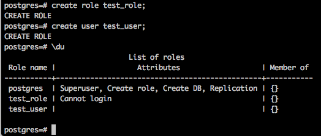
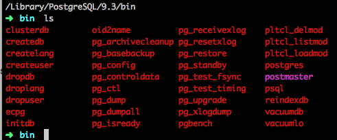
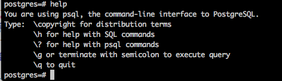

1、安装
针对mac，官网提供了4种方法：
- Graphical install:即下载zip包，里面是postgresql-xxx(版本)-3-osx.app。
- Postgres.app：下载地址。步骤和第一步类似。
- 使用Fink安装（没试过）
- 使用MacPort安装（没试过）
- 使用Homebrew安装：>>brew install postgresql。
安装完成后，postgresql会默认生成一个名为postgres的数据库和一个名为postgres的数据库用户。 值得注意的是，同时还生成了一个名为postgres的操作系统用户（登录电脑时可以看到）。
2、新增用户和为该用户新增数据库
有两种方式：
- 进入到postgresql控制台下使用create user xxxuser、create database xxxdb owner xxxuser。
- 直接在shell下使用postgres提供的命令createdb/createdb.
3、登录数据库
格式：psql -U xxxuser -d xxxdb -h xxxhost -p xxxport
- xxxuser:数据库用户
- xxxdb:指定数据库
- xxxhost:指定ip
- xxxport:指定端口
注意：可以直接psql -U xxxuser，其他均可以不输入，取默认值，此时host为本地，port为5432,数据库为同名数据库，如果不存在该数据则不能登录:
psql -U test_user
Password for user test_user:
psql: FATAL: database "test_user" does not exist
4、用户和角色关系
在postgresql里没有区分用户和角色的概念。"create user"和"create role"几乎完全相同，唯一的区别是："create user"命令创建的用户默认带有login属性；而"create role"命令创建的用户默认不带login属性。

5、常用命令
5.1 shell命令

用户命令
- createdb：创建数据库
- createuser：创建用户
- dropdb：删除数据库
- dropuser：删除用户
- createlang：安装一个过程语言进 PostgreSQL 数据库
- droplang：卸载一个过程语言
- pg_dump：将数据库导出脚本
- pg_dumpall：导出所有数据库
- psql：基于Postgresql交互
系统命令
- pg_ctl：启动、停止、重启服务，如pg_ctl start(等于service postgresql start)
- pg_controldata：显示PostgreSQL服务的内部控制信息。
- pg_config：打印当前PostgreSQL配置信息。
5.2 postgresql 控制台命令

- help：查看帮助。
- \copyright：查看版本许可。
- \h：查看SQL命令的解释，比如\h select。
- \?：查看psql命令列表。
- \l：列出所有数据库。
- \c [database_name]：连接其他数据库。
- \d：列出当前数据库的所有表格。
- \d [table_name]：列出某一张表格的结构。
- \du：列出所有用户。
- \e：打开文本编辑器。
- \conninfo：列出当前数据库和连接的信息。
- \password username：修改用户密码。